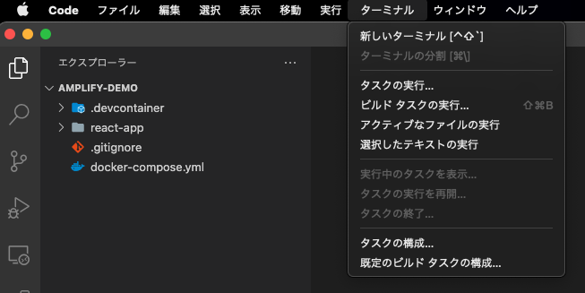
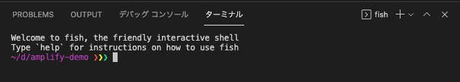
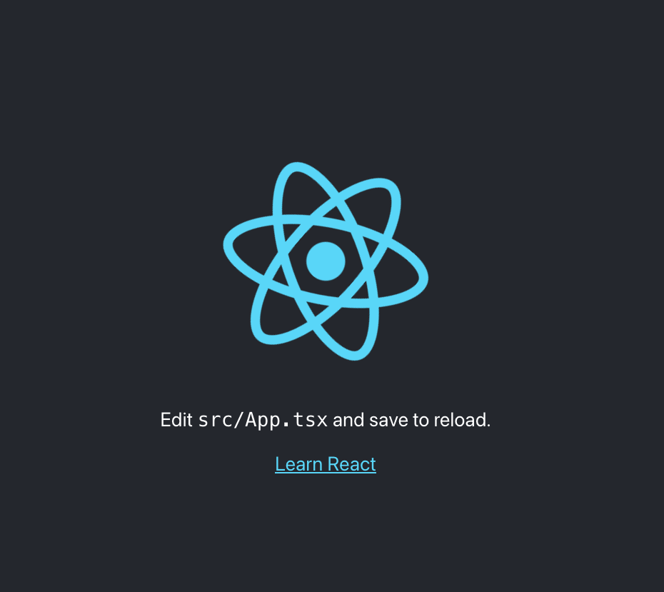

1. 環境作成
1.1. はじめに
Dockerで作成していきます。プログラム変更時のエディタはVS Codeを使用していますが，ご自身が使いたいエディタで問題ありません。
1.2. 作業リポジトリのclone
作業用ディレクトリとなるプログラムをcloneします。 clone先はdockerコマンドが動作するご自身の環境に合わせてください。
git clone https://github.com/Tanabebe/amplify-demo.git
cloneしたらVS Codeで上記のフォルダを開きます。開いたら下図のように「ターミナル」→「新しいターミナル」を選択し，ペイン上に表示させます。
 
※デフォルトシェルは環境によって違うのですが，bashやzshなどdockerコマンドが通るシェルであれば問題ないです。
1.3. Dockerの起動
以下のコマンドを実行して，コンテナを起動します。Creating amplify-demo_amplify_1 ... doneとターミナルに表示されればOKです。
docker-compose up -d
※PC性能，回線状況により異なりますが，大体5分程度でした。
起動出来たら念の為，コンテナ名と起動状態の確認を行います。以下の例だとamplify-demo_amplify_1がコンテナ名です。
docker-compose ps
以下のように，Nameと表示されている箇所がコンテナ名です。
Name Command State Ports
-----------------------------------------------------------------------------------------------------------
amplify-demo_amplify_1 docker-entrypoint.sh node Up 0.0.0.0:3000->3000/tcp, 0.0.0.0:3001->3001/tcp
コンテナ起動は問題ないですが，コンテナ側のnode_modulesはホスト側にマウントしていないため，以降のプログラム修正時に都合が悪いです。無理やり感はありますが，手動でコピーします。
# docker cp コンテナ名:/amplify-demo/react-app/node_modules react-app/
docker cp amplify-demo_amplify_1:/amplify-demo/react-app/node_modules react-app/
コピーが終わったらコンテナの中に入っていきます。
# docker exec -it {コンテナ名} bash
docker exec -it demo_amplify_1 bash
1.4. 事前準備の最終確認
コンテナの中に入ったら念の為，nodeとnpmのバージョン，amplifyがインストールされているか確認します。
node -v && npm -v && amplify --version
下記のように表示されたらOKです。
v14.16.1
6.14.12
Initializing new Amplify CLI version...
Done initializing new version.
Scanning for plugins...
Plugin scan successful
4.50.2
最後にReactアプリが動作するか確認します。
yarn start
以下のようにコンソールに表示されたらhttp://localhost:3000にアクセスしましょう。
Compiled successfully!
You can now view react-app in the browser.
Local: http://localhost:3000
On Your Network: http://172.22.0.2:3000
Note that the development build is not optimized.
To create a production build, use yarn build.
アクセスしたら下図の画面が表示されたらOKです。ターミナル上でctrl + cでサーバーを一旦停止させます。

次はGitHubへリポジトリを作成し，コンテナの中に入ったまま起動確認したReactアプリをあげていきます。